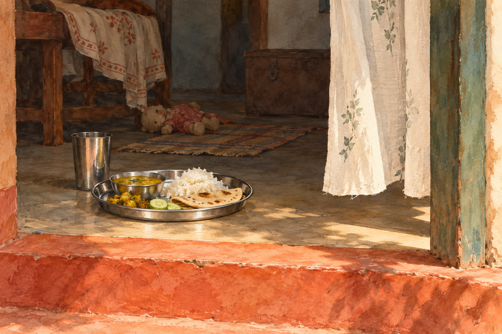
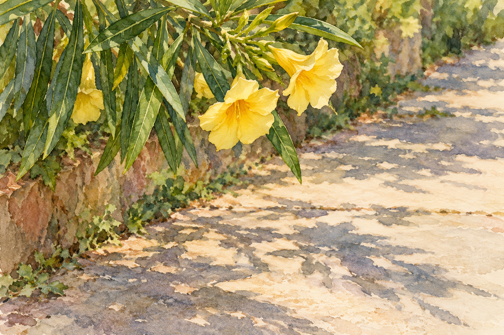
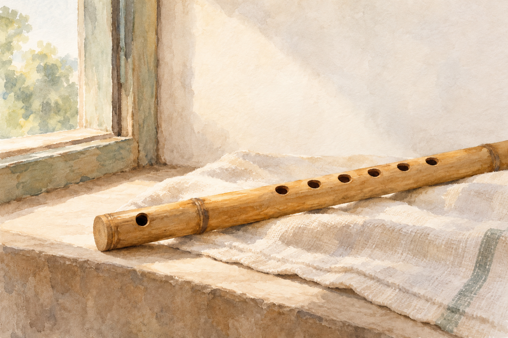
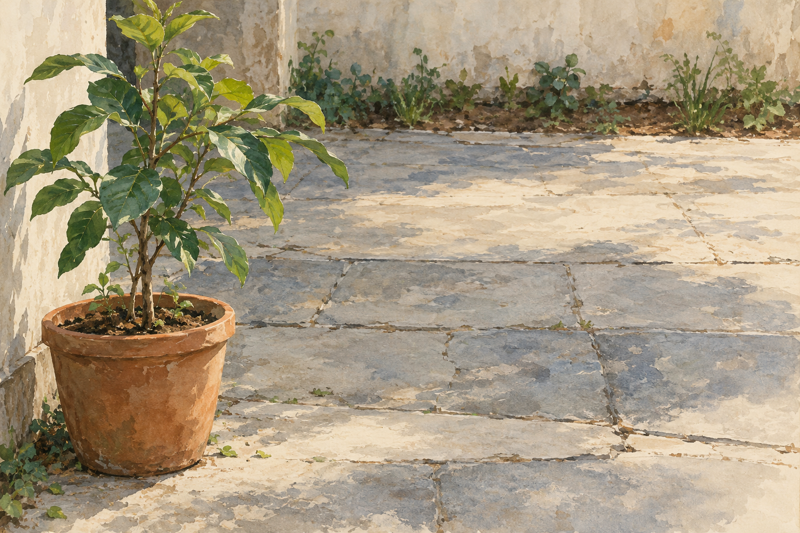
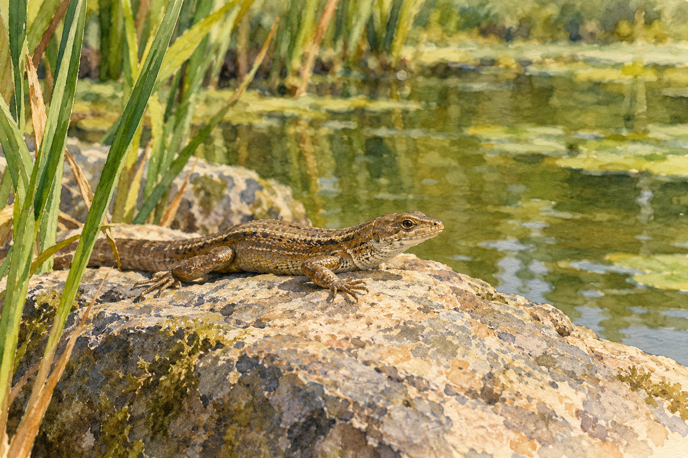
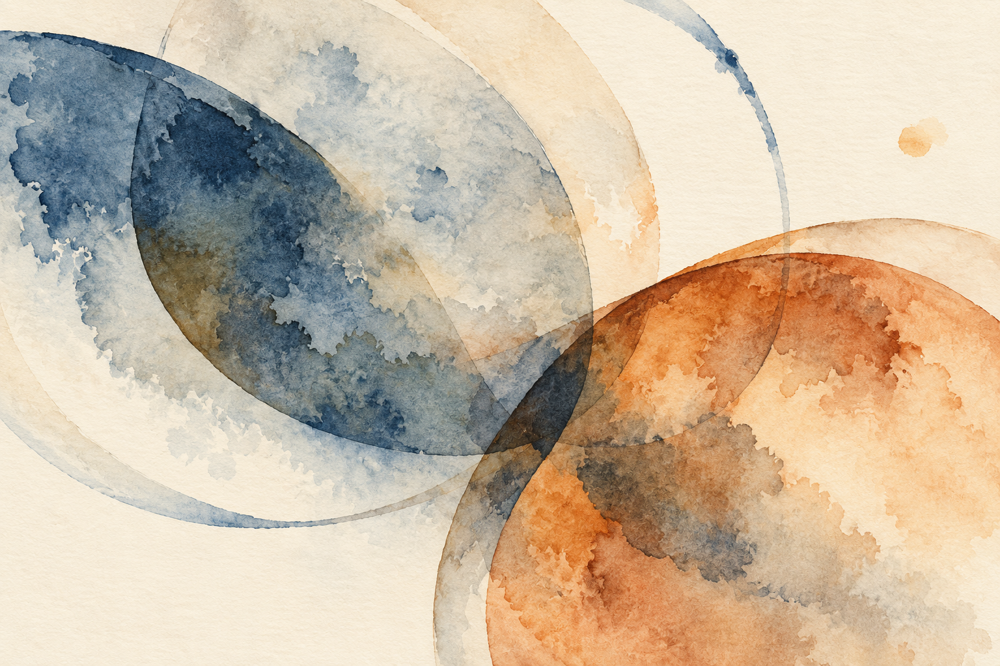
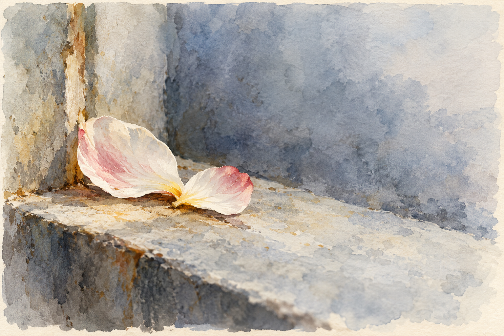
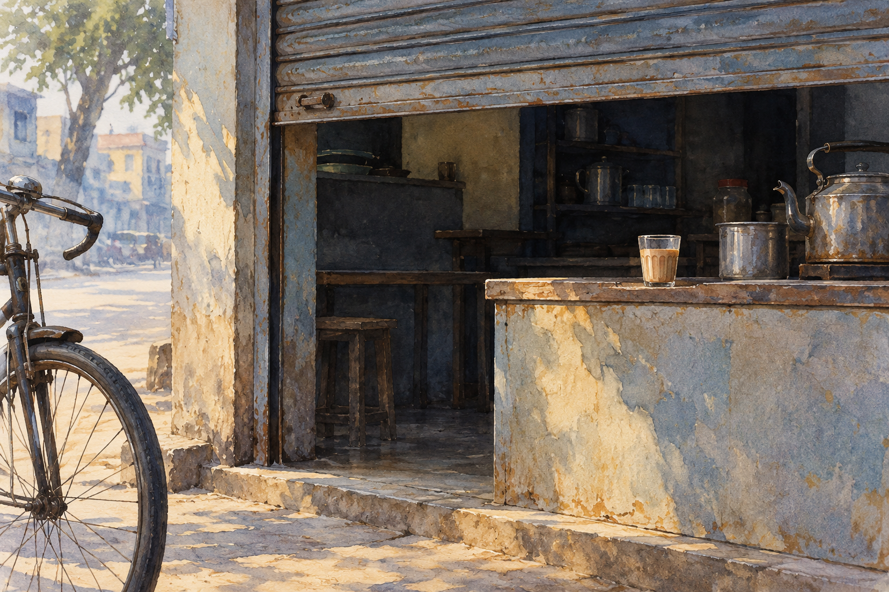
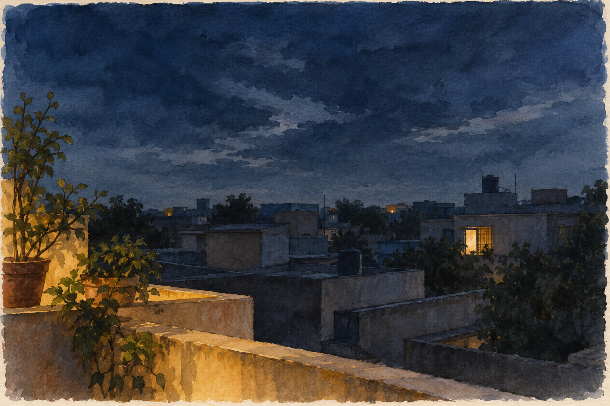

KABITA LIVE · LOCAL DESIGN PILOT
Each edition,
its own atmosphere.
Nine new interior illustrations across three recent issues. A few poems receive a deliberate visual companion; others gain room to speak through type and space.
9 of 9 integrated locally · 0 held · Covers and poem texts preserved · Not published
Issue 47
Ordinary closeness: laterite, pale green and ivory; domestic threshold, botanical observation, a spare material study.
Browse this edition

A meal at the doorway
बचपन की याद
Ritu Mahipal / रितु महिपाल
A domestic threshold and meal recall maternal care without inventing a portrait or wedding scene.
integrated local
Previous shared image
 our-story
our-storyPrompt 1

Morning along the path
Walkway
Gopal Lahiri
Close botanical observation answers the poem’s attentive morning without illustrating every metaphor.
integrated local
Previous shared image
 courtyard-petals
courtyard-petalsPrompt 1

A place for breath
ପବନ
Manoranjan Sahoo / ମନୋରଞ୍ଜନ ସାହୁ
The material flute suggests breath becoming music, leaving the poem’s intimacy to the words.
integrated local
Previous shared image
 sea-breeze-cloth
sea-breeze-clothPrompt 1 · Prompt 2
Room for the words
- Don`t Set The Rules For Her — Keep this declaration of autonomy free of the generic bird-and-cage shorthand. (integrated local)
- Why do I write — Let the named ordinary memories remain the reader’s own, without another writing-desk image. (integrated local)
Issue 46
Small life and inward space: mineral greens, earth and blue; close observation, confined growth and one abstract pause.
Browse this edition

Room for a tree
ଗଛ
Sunanda Pradhan
The confined sapling embodies the search for ground; avoid inventing a precise botanical identification.
integrated local
Previous shared image
 kendu-light
kendu-lightPrompt 1

Pondside warmth
Five Haiku
Randy Brooks
Choose one small lived observation from the sequence, keeping the haiku’s changes of scale open.
integrated local
Previous shared image
 pond-at-dawn
pond-at-dawnPrompt 1

What reaches the page
मन! आकाशगंगा
Sabita Singh Meera/ सविता सिंह मीरा
An abstract pause for inner galaxies; it must be visibly a painting, not fabricated astronomy.
integrated local
Previous shared image
 search
searchPrompt 1
Room for the words
- ଛାରପୋକ — Avoid decorative imagery for the poem’s political violence and ethical anger. (integrated local)
- GINGERY CARE — Keep the address and emotional language open rather than inventing a couple. (integrated local)
- Withdrawal — Do not aestheticize withdrawal or illustrate an assumed diagnosis. (integrated local)
Issue 45
Between day and night: cool slate washes with restrained ochre; intimate petals, a street beginning, an inwardly quiet city.
Browse this edition

Words, almost
ଗୋଟିଏ ଶବଦରେ
Sulagna Kar / ସୁଲଗ୍ନା କର
Two petals echo the closing intimacy without repeating an entire courtyard or arranging a floral emblem.
integrated local
Previous shared image
 editorial-desk
editorial-deskPrompt 1

Before the day separates us
Until Next Morning
Sonnet Mondal
An everyday shop beginning its day connects public morning sounds with private separation.
integrated local
Previous shared image
pond-at-dawnPrompt 1

The city keeps its quiet
MY TRANQUIL CITY, TONIGHT
Nandini Sahu
The outer city remains calm while the poem carries its inward argument; no biographical setting is claimed.
integrated local
Previous shared image
 archive
archivePrompt 1
Room for the words
- The Modern Riddle — Let the riddle and unanswered questions carry the tension. (integrated local)
- आवरण — The poem asks not to equate a poet with a pictured character; give its argument space. (integrated local)
- Discharge — A very short poem benefits from an unillustrated pause. (integrated local)